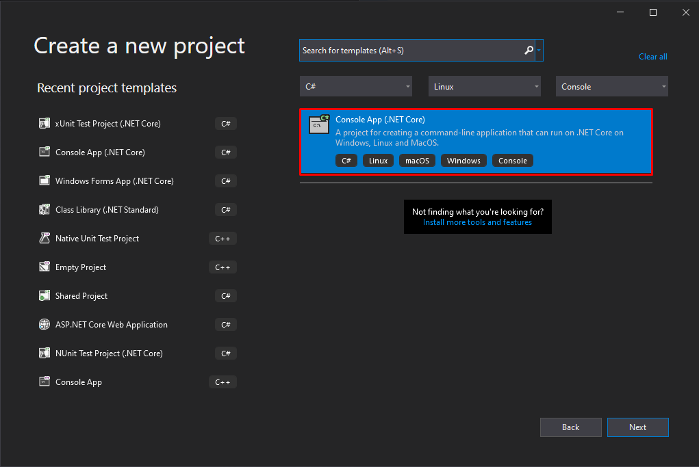
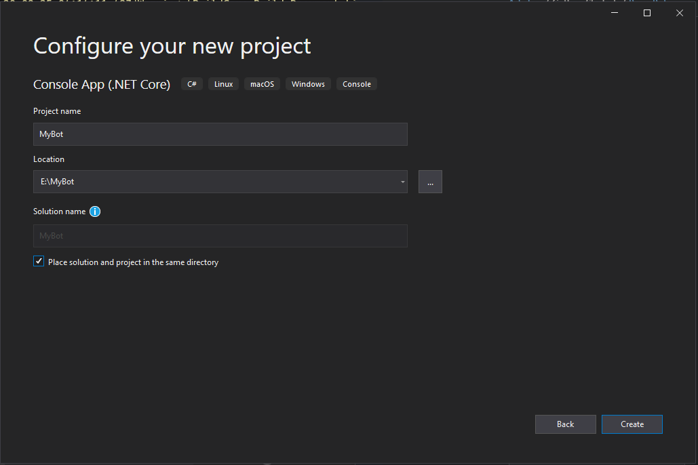
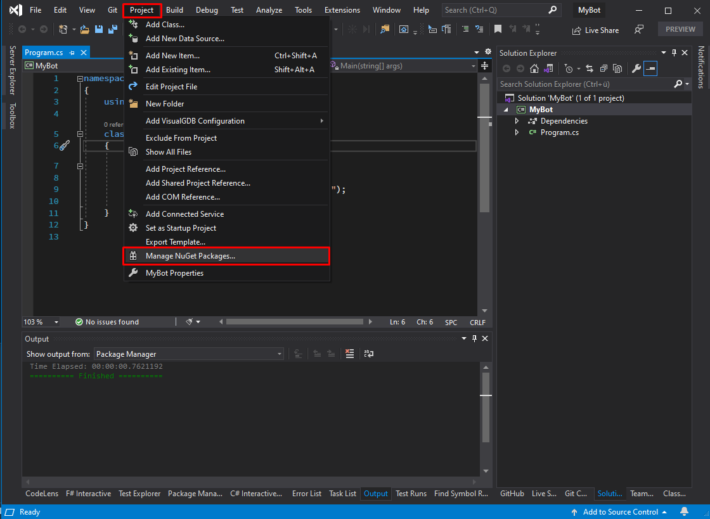
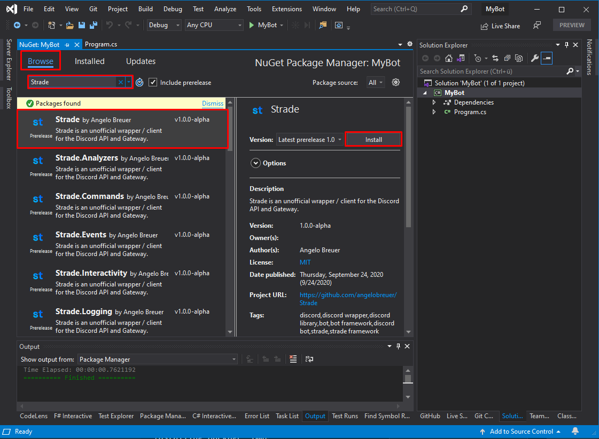

Your First Bot
In this example we will create our first bot step-by-step using Visual Studio.
Note that you need at least basic programming skills for developing a bot.
Create the project
First, we create a new project / solution for the bot. We recommend using .NET Core to allow cross platform compatibility.
1. Step Create new project
- Open Visual Studio.
- On the start window, choose
Create a new Project. C reate a new solution with clicking onFile > New > Project. - Search
Console-App (.NET Core)and double-click it.

2. Step Configure Project
- Give your project a cool name (e.g.
CoolBotProject). - Adjust other settings (if needed).
- Click on
Continue.

3. Step Install Strade package
- Right Click your Project (not the Solution)
- Click on
Manage NuGet-Packages... - Search "Strade" package
- Install the latest package version.

